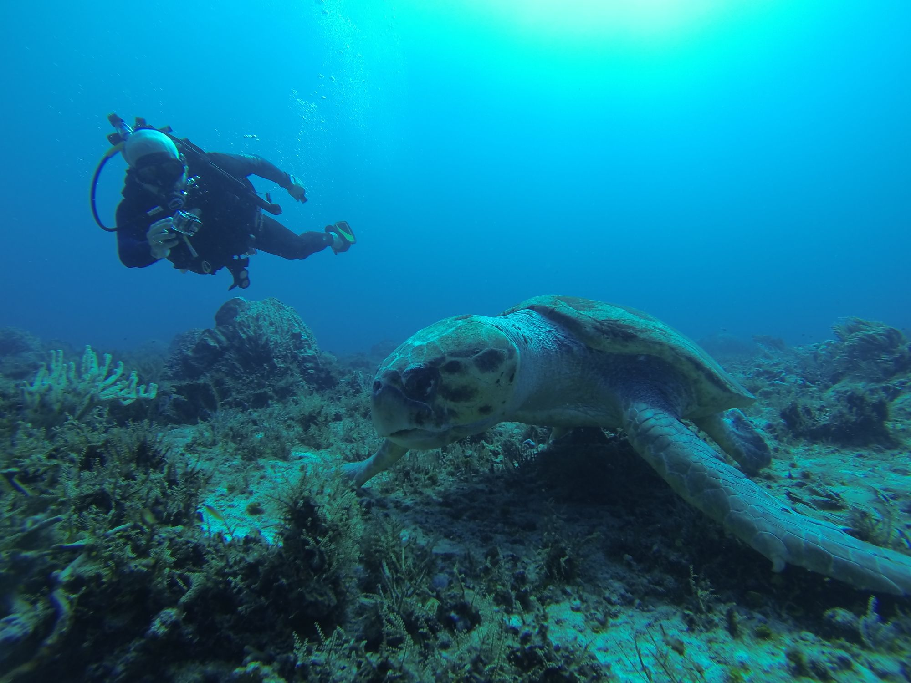

Med i pakken
- Rejse og ophold efter det aktuelle tilbud
- PADI Open Water-undervisning og certificering
- Dansk instruktør og undervisning i små hold
- Dykning på husrevet inden for gældende rammer

Tryghed og udstyr
Friheden under vandet begynder med tydelige rammer, kendt udstyr og plads til at spørge.
Instruktør og hold
Undervisning på dansk og små hold gør det lettere at stille spørgsmål. Instruktøren følger progressionen og gentager øvelser, når der er brug for det.
Udstyret
Før åbent vand har du prøvet hvert stykke udstyr i kontrollerede omgivelser og ved, hvad det gør.
Transparent fra begyndelsen
Den endelige oversigt skal altid følge udbyderens aktuelle tilbud og vilkår.
Tal med os om sikkerhed, helbred og det tempo, der skal til for at lære ordentligt.
Tal med os om forløbet